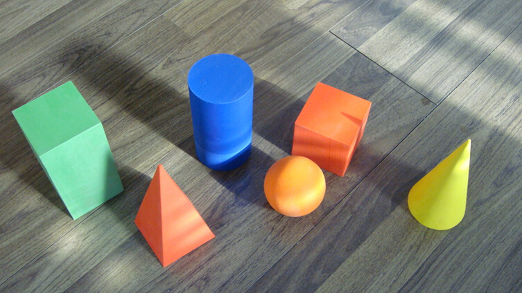

一个复杂网站或单页应用的实际例子
组件容器就是包含所有组件的一个页面。
Transformers 框架是一个以 Javascript 为控制器和视图的，彻底组件化的前端框架。
解耦，解耦，解耦，重要的事情说三遍！
<!DOCTYPE html>
<html>
<body>
<aside>
<tf:common-navigation></tf:common-navigation>
</aside>
<div>
<tf:home-info></tf:home-info>
<tf:home-history></tf:home-history>
<tf:home-message></tf:home-message>
</div>
</body>
</html>
// 定义名为 MyInboxMessage 的组件
TF.define('MyInboxMessage', {
DomReady: function() {
},
// Action 是组件对外的接口
testAction: function(args) {
},
// 组件私有方法，外部无法访问
renderOk: function() {
}
});
组件名: MyInboxMessage
JS: http://domain.com/my/inbox/message.js
HTML: http://domain.com/my/inbox/message.html
DATA: http://domain.com/my/inbox/message.php
| Item | Value | Quantity |
|---|---|---|
| Apples | $1 | 7 |
| Lemonade | $2 | 18 |
| Bread | $3 | 2 |
These guys come in two forms, inline:
“The nice thing about standards is that there are so many to choose from”
and block:
“For years there has been a theory that millions of monkeys typing at random on millions of typewriters would reproduce the entire works of Shakespeare. The Internet has proven this theory to be untrue.”